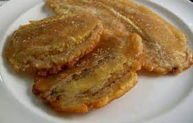
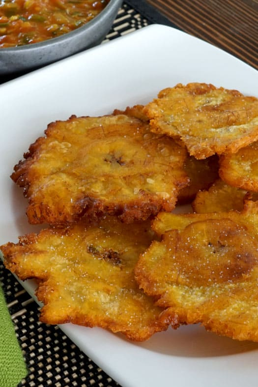

Patacones


Description
This food consists of flattened pieces or chunks of green bananas
or plantains, and can be eaten alone with grated cheese or as a
side dish of other foods.
Ingredients
- Green bananas or green plantains.
Steps
- Peel the bananas or plantains. (Be careful, when they're green
the skin of the bananas and plantains can stain hands and clothes)
- Optionally you can cut them into pieces or cook them whole.
- Fry them on medium high temperature for about 3 minutes.
- Let them rest over some kitchen paper, then, using a plate and
a plastic bag flatten them.
- Turn the heat all the way up and fry them again for about 3 more minutes.
- Let them rest over kitchen paper and salt them a little.
- Eat alone with cheese, sour cream or as a side dish.